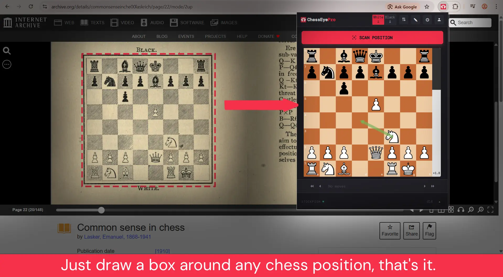
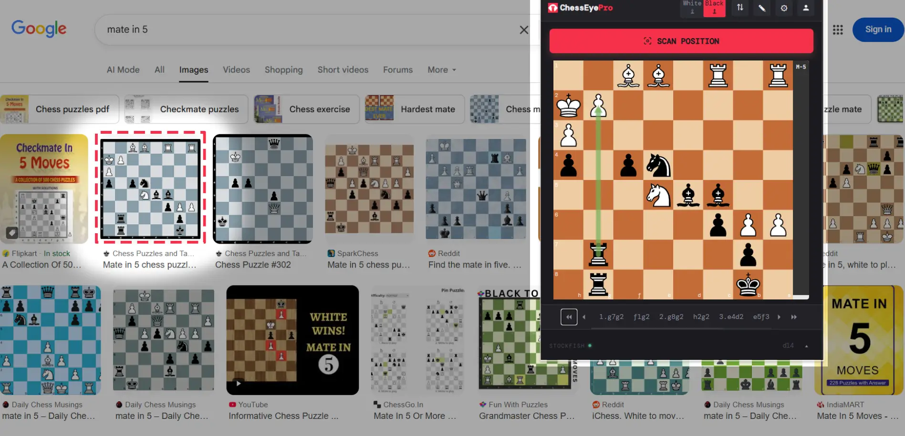
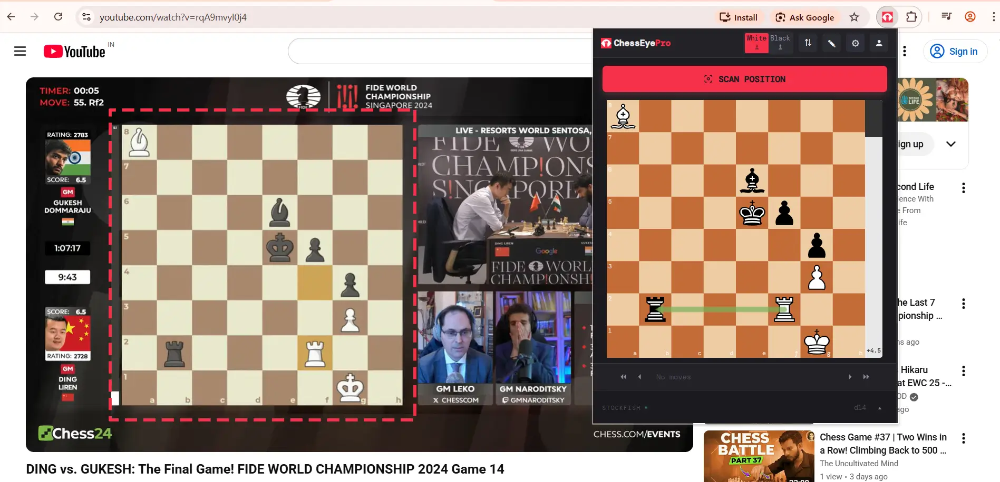

Scan Any Chess Position.
Analyze Instantly.
Just draw a box around any chess board on your screen — old books, YouTube videos, Google Images — and get full Stockfish analysis in seconds.

Everything You Need for Chess Analysis
From instant position detection to deep Stockfish analysis — all running right in your browser.
Instant Scan
Select any chess board from any website — printed books, screenshots, live streams — and detect the position in seconds.
Stockfish Analysis
Built-in Stockfish engine runs locally in your browser. See top 3 lines with adjustable search depth up to d20.
Copy FEN & PGN
One-click copy of FEN string or PGN notation. Paste into Lichess, Chess.com, or any analysis tool instantly.
Open in Lichess
Instantly open any scanned position on Lichess for deeper analysis, playing against the computer, or sharing.
Best Move Arrows
See the engine's recommended moves drawn directly on the interactive chessboard with beautiful animated arrows.
Customizable Board
Choose from multiple board styles and piece sets. Edit positions directly on the interactive drag-and-drop board.
Four Simple Steps
From any chess board on your screen to full engine analysis in under 5 seconds.
Click the Icon
Open any webpage with a chess position and click the ChessRadarPro icon in your toolbar.
Hit "Scan Position"
Press the scan button. A selection overlay appears on the page.
Draw a Rectangle
Click and drag around the chess board. Release to crop and send for detection.
Get Instant Analysis
The position loads into an interactive board with Stockfish analysis, best move arrows, and FEN/PGN export.
Works Everywhere Chess Appears
Old scanned books, Google Image thumbnails, YouTube video frames — ChessRadarPro handles them all.
Old Chess Books
Recognize printed diagrams from century-old scanned pages — like a 1910 Emanuel Lasker classic on Internet Archive.

Google Image Thumbnails
Even the smallest "mate in 5" thumbnails on Google Images are detected accurately. No need to open full-size.

YouTube Videos
Pause the video, scan the board, get engine evaluation. Perfect for live broadcasts and video lessons.
Start Free. Upgrade When Ready.
No credit card required. Get started with generous free limits.
- 5 scans/day as guest
- 20 scans/day with Google sign-in
- Full Stockfish analysis
- FEN & PGN export
- Customizable board & pieces
- Unlimited scans
- All free features included
- Works on every signed-in device
- Priority support
- Cancel anytime